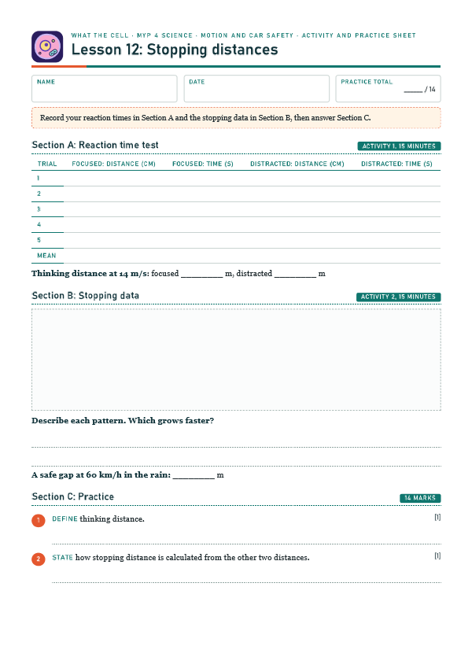

By the end of the lesson you can
- Define thinking, braking and stopping distance
- Calculate thinking distance from speed and reaction time
- Explain the factors that affect each distance
- Analyse stopping distance data
Keys: arrows or a presentation clicker move the slides, F for full screen. Slides with a red dot have a video or simulation.
Videos (all 5 minutes or less)
- 3:43
Stopping distance
FuseSchool. While you watch: What two distances make up the stopping distance? Slide 10.
Simulations
- Lab
Print and practise

Activity and practice sheet
Used in the lesson’s activities, with practice questions. Your teacher has the answers.
Download (PDF)Lesson 12 slides
All 15 slides in one file, to read again or print. The video buttons on the slides open YouTube.
Download the slides (PDF)Revising? The Revision tab on the unit page has the unit notes and review.
Class activity pack
Everything to print for the lesson’s activities: picture cards, sorting mats, station cards with their kit lists, and the teacher’s set-up notes. Print it before class.
Download the activity pack (PDF)Notes: Stopping distances
reaction time
Time between seeing a danger and pressing the brake. For example: about 0.7 s.
thinking distance
Distance travelled during the reaction time. For example: speed × reaction time.
braking distance
Distance travelled while the brakes slow the car. For example: longer on wet roads.
stopping distance
Thinking distance + braking distance. For example: about 23 m at 50 km/h.
friction
The force between tyre and road that lets a car brake. For example: worn tyres grip less.
distraction
Anything that takes attention from the road. For example: a phone.
Key words
| velocity | speed in a given direction |
|---|---|
| resultant force | the overall force on an object |